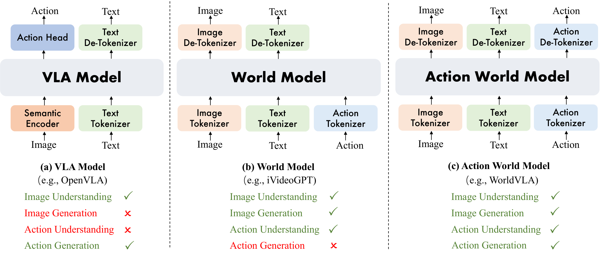
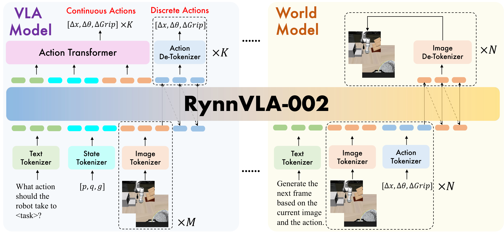
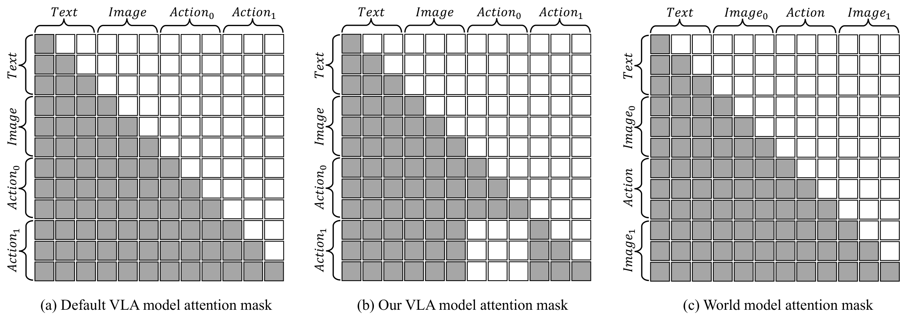
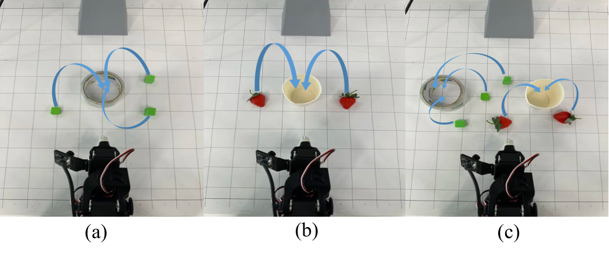
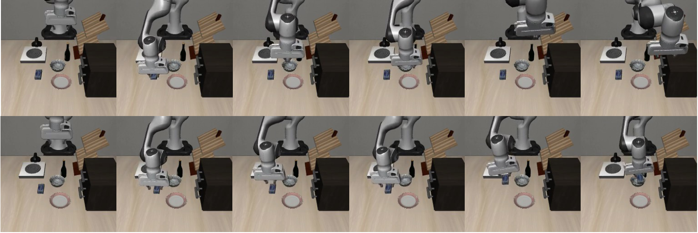
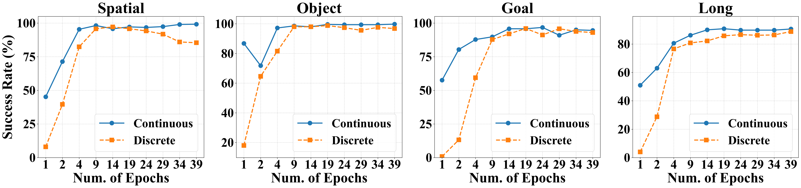

RynnVLA-002: A Unified Vision-Language-Action and World Model
1. 论文速览
难度评级：★★★★☆。阅读需要熟悉 VLA、MLLM tokenization、VQ-GAN 图像 token、离散动作 token、continuous action head、world model 视频预测指标，以及 LIBERO / LeRobot 评测协议。
关键词：Vision-Language-ActionWorld ModelUnified VocabularyAction ChunkingAction TransformerLIBERO
| 阅读定位项 | 精简答案 |
|---|---|
| 论文要解决什么 | 标准 VLA 只把 action 放在输出侧，缺少对动作动态和物理演化的显式内部建模；标准 world model 能预测未来观测但不能直接输出机器人动作。论文试图统一 action planning 和 future visual prediction。 |
| 作者的方法抓手 | 基于 Chameleon 的统一图文生成架构，引入 image/text/state/action tokenizers，将 VLA 数据和 world model 数据混合训练；同时保留离散 action token 训练，并增加 continuous Action Transformer head 解决真实机器人泛化和速度问题。 |
| 最重要的结果 | 在 LIBERO 中，RynnVLA-002-Continuous 无额外预训练达到 97.4% 平均成功率；真实 LeRobot SO100 上，加入 world model 数据后成功率从低于 30% 提升到 block 任务 80% 以上，论文摘要称整体成功率提升 50%。 |
| 阅读时要注意的点 | “统一”不是只共享 backbone 名义，而是把 VLA 查询和 world-model 查询都组织成同一套 token 序列与共享参数；但离散 action 在真实机器人上失败，所以连续动作头是这篇方法能落地的重要补丁。 |
核心贡献清单
- 提出 RynnVLA-002，把 VLA model 和 world model 统一到一个 action world model 中，共享参数并混合训练。
- 提出离散 action chunk 的 attention mask，禁止当前 action 依赖同一 chunk 内先前 action，缓解 autoregressive action 的误差传播。
- 在离散建模之外加入 continuous Action Transformer head，并用 L1 回归监督连续动作 chunk，使真实机器人动作更平滑、推理更快、泛化更好。
- 在 LIBERO 和真实 LeRobot SO100 上验证：world model 数据帮助 VLA，VLA 数据也帮助 world model 生成。

2. 动机
2.1 要解决什么问题
VLA 模型把语言目标和视觉观测映射到动作，是当前机器人 foundation policy 的主流形式。论文认为这种架构有三个缺陷：动作只在输出侧，模型没有显式 action dynamics 表示；模型不预测“如果执行某动作世界会怎样变化”，因此缺少想象和反事实能力；模型没有直接学习物理动态，难以内化接触、稳定性、物体交互等规律。
World model 正好补上另一半：它可以根据当前图像和动作预测未来状态，学习环境动态。但传统 world model 不直接输出动作，所以无法独立完成 action planning。RynnVLA-002 的问题定义就是把二者放到同一个可查询的模型里：问它 “What action should the robot take to ...?” 时它是 VLA；问它 “Generate the next frame ...” 时它是 world model。
2.2 已有方法卡在哪里
VLM-based VLA 往往借助大规模 MLLM 的视觉语言理解能力，再加 action head 或 action expert。离散 action token 便于接入语言模型的 cross-entropy 训练，但在精细控制上有量化误差和自回归误差累积问题。连续 action head 可以输出更平滑轨迹，但如果没有对世界演化的建模，模型仍可能只学习“图像到动作”的短视关联。
Visual generation-based VLA 与 world model 能预测未来帧，但仍常常面临视觉保真度、跨域迁移、计算效率，以及如何把预测动态真正转化为动作改进的问题。本文的定位是：用同一个 MLLM 同时吃 VLA 数据和 world model 数据，让动作理解与视觉动态预测互相提供训练信号。
2.3 本文解决思路
RynnVLA-002 采用 unified token vocabulary，把 image/text/action/state 组织成同一语言模型可处理的 token 序列。VLA 侧从语言、状态和历史双视角图像生成 action chunk；world model 侧从图像和 action token 生成下一帧图像。离散 action 用 cross-entropy 训练，world image token 也用 cross-entropy 训练；连续 action head 则使用 L1 regression。
4. 方法详解

4.1 统一建模目标
论文先把 VLA 和 world model 写成两个条件生成问题：
VLA 问题：给定语言、状态和历史观测，生成动作。
$$a_t \sim \pi(a_t \mid l, s_{t-1}, o_{t-h:t})$$World model 问题：给定历史观测和动作，预测下一帧观测。
$$\hat{o}_t \sim f(o_t \mid o_{t-h:t-1}, a_{t-h:t-1})$$RynnVLA-002 用一个参数集合 $\psi$ 来支持这两种查询。不同任务只改变输入 token 的组织方式和文本前缀，主体模型共享。
4.2 Data Tokenization
模型初始化自 Chameleon，因为 Chameleon 本身支持 unified image understanding and generation。RynnVLA-002 涉及四个 tokenizer：
| Tokenizer | 作用 | 关键细节 |
|---|---|---|
| Image tokenizer | 把图像离散化为视觉 token | VQ-GAN；compression ratio 16；codebook size 8192；$256\times256$ 图像生成 256 tokens，$512\times512$ 生成 1024 tokens。 |
| Text tokenizer | 处理语言 prompt | 继承 Chameleon 的 BPE tokenizer。 |
| State tokenizer | 离散化 proprioceptive state | 每个连续维度按训练数据范围分成 256 bins。 |
| Action tokenizer | 离散化机器人动作 | 每个连续动作维度分成 256 bins；连续 Action Transformer 输出 raw action，不经过 tokenization。 |
4.3 VLA Model Data
VLA 训练样本的序列结构为：
| $M$ | 历史图像观测数量。实验中 VLA 使用 $M=2$。 |
| $K$ | action chunk size。LIBERO-Long 和 LIBERO-Spatial 使用 $K=10$，LIBERO-Object 和 LIBERO-Goal 使用 $K=5$。 |
| $\mathcal{L}_{dis\_action}$ | 离散 action token 的 cross-entropy loss。 |
文本 prompt 形式是 “What action should the robot take to <task>?”。输入图像包括 front 和 wrist camera，状态包括 proprioceptive state。
4.4 World Model Data
world model 的序列结构为：
所有 world model 样本使用同一个文本前缀，论文正文写为 “Generate the next frame based on the current image and the action.”，官方 README 的数据样例则是 “Generate the next image based on the provided sequence of historical images and corresponding actions.”
| $N$ | 自回归预测轮数。实验中为效率设为 $N=1$。 |
| $\mathcal{L}_{img}$ | 未来图像离散 token 的 cross-entropy loss。 |
离散训练目标为：
这意味着 action prediction 和 image prediction 在同一个训练阶段混合优化。
4.5 Discrete Action Chunk 的 Attention Mask
自回归生成多个动作时，如果默认 causal attention 允许后续 action token 看见前面 action token，早期动作错误会进入后续动作条件，引起 error accumulation。作者的 attention mask 修改为：当前 action 只看 text / visual / state 输入，不看同一 chunk 里先前 action。

这个设计把多个 action token 变成“条件独立地从视觉上下文生成”，降低误差传播。但代价也在论文中出现：真实机器人上，这种离散 action chunk 容易不平滑，因为同一 chunk 内动作彼此隔离，不能保证轨迹连续。
4.6 Continuous Action Transformer Head
为了处理真实机器人泛化和推理速度，作者在离散联合建模之外加一个小型 Action Transformer。它读取完整上下文，包括 language、image、state tokens，用 learnable action queries 并行输出整个连续动作 chunk。
最终训练目标把离散 action、world image 和连续 action 三种监督合在一起。
$$\mathcal{L}=\mathcal{L}_{dis}+\alpha\mathcal{L}_{conti} =\mathcal{L}_{dis\_action}+\mathcal{L}_{img}+\alpha\mathcal{L}_{conti\_action}$$| $\mathcal{L}_{conti\_action}$ | 连续动作的 L1 regression loss。 |
| $\alpha$ | 连续动作损失权重，实验中设为 10。 |
Training batch construction 1. Sample VLA data: prompt = "What action should the robot take to?" input = text + state + M history images from front/wrist cameras target_discrete = K action tokens target_continuous = K raw actions through Action Transformer 2. Sample world-model data: prompt = "Generate the next frame based on the current image and the action." input = current front/wrist images + action tokens target = next front/wrist image tokens 3. Optimize: L = CE(discrete actions) + CE(image tokens) + alpha * L1(continuous actions)
5. 实验
5.1 实验设置
| 实验 | 设置 | 指标 |
|---|---|---|
| LIBERO simulation | 四个 suite：Spatial、Object、Goal、Long。清洗数据时移除 unsuccessful trajectories 和 no-operation actions；world model 使用 90% / 10% train-val split。 | VLA 用每任务 50 次不同初始状态 rollout 的 success rate；world model 用 FVD、PSNR、SSIM、LPIPS。 |
| LeRobot SO100 real-world | 两类 pick-and-place：block inside circle 248 demos，strawberries into cup 249 demos；均为 human teleoperation expert demonstrations。 | 每任务每场景测试 10 次，报告 success rate。 |
| Ablation | 分别去掉 world model 数据、action chunking、本文 attention mask、wrist camera、proprioceptive state，比较离散和连续动作。 | LIBERO success rate、真实机器人 success rate、world model generation metrics、Hz 推理频率。 |
5.2 LIBERO 主结果
| 方法 | Pretraining | Action Type | Spatial | Object | Goal | Long | Average |
|---|---|---|---|---|---|---|---|
| UniVLA | 是 | Discrete | 96.5 | 96.8 | 95.6 | 92.0 | 95.2 |
| OpenVLA-OFT | 是 | Continuous | 97.6 | 98.4 | 97.9 | 94.5 | 97.1 |
| RynnVLA-002-Discrete | 否 | Discrete | 94.2 | 96.8 | 94.6 | 87.6 | 93.3 |
| RynnVLA-002-Continuous | 否 | Continuous | 99.0 | 99.8 | 96.4 | 94.4 | 97.4 |
作者强调的关键点是：RynnVLA-002-Continuous 在没有大规模机器人预训练的情况下，平均成功率达到 97.4%，与若干带预训练的强 baseline 相当或更高。离散版本也达到 93.3%，说明统一离散 action/world token 方案在仿真中有效，但连续头进一步提高了整体表现。
5.3 真实机器人结果

| 任务 / 场景 | GR00T N1.5 | $\pi_0$ | RynnVLA-002 |
|---|---|---|---|
| Block / Single-target | 90.0 | 100.0 | 90.0 |
| Block / Multi-target | 60.0 | 70.0 | 90.0 |
| Block / w/ Distractors | 50.0 | 50.0 | 80.0 |
| Strawberries / Single-target | 50.0 | 80.0 | 80.0 |
| Strawberries / Multi-target | 50.0 | 70.0 | 80.0 |
| Strawberries / w/ Distractors | 70.0 | 40.0 | 50.0 |
真实机器人评价更能暴露 discrete action 的局限。论文正文说 RynnVLA-002 在 cluttered environments 中竞争力较强，尤其 block 任务中 multi-target 和 distractor 场景比 baseline 高 10% 到 30%。但 strawberry + distractors 场景中 GR00T N1.5 仍高于 RynnVLA-002，这说明本文真实机器人结果不是全场景压倒式领先。
5.4 World Model Benefits VLA
| 离散动作设置 | World Model | Action Chunking | 本文 Attention Mask | Average |
|---|---|---|---|---|
| VLA only | 否 | 否 | 否 | 62.8 |
| + World Model | 是 | 否 | 否 | 67.2 |
| + Chunking, default mask | 否 | 是 | 否 | 54.0 |
| + Chunking + proposed mask | 否 | 是 | 是 | 76.6 |
| 完整离散模型 | 是 | 是 | 是 | 78.1 |
这张消融表说明两个点：只加 world model 数据能从 62.8 提到 67.2；action chunking 如果用默认 causal mask 会掉到 54.0，而配合本文 mask 后提高到 76.6。完整离散模型达到 78.1。

5.5 Continuous Action 的消融
| 设置 | World Model | Wrist Camera | Proprioceptive State | Goal | Object | Spatial | Long | Average |
|---|---|---|---|---|---|---|---|---|
| 基础连续 VLA | 否 | 否 | 否 | 90.2 | 92.4 | 88.4 | 67.0 | 84.5 |
| + Wrist Camera | 否 | 是 | 否 | 91.4 | 95.4 | 98.2 | 81.4 | 91.6 |
| + World Model | 是 | 是 | 否 | 96.0 | 97.4 | 99.0 | 85.8 | 94.6 |
| 完整连续模型 | 是 | 是 | 是 | 96.4 | 99.8 | 99.0 | 94.4 | 97.4 |
连续模型的最强证据是：wrist camera 从 84.5 提到 91.6，world model 数据从 91.6 提到 94.6，proprioceptive state 再把 Long 从 85.8 拉到 94.4。真实机器人消融更强：缺 wrist camera 或 proprioceptive state 时成功率为 0；缺 world model 时 Single / Multi / Distractors 只有 30.0 / 10.0 / 0，而完整连续模型达到 80.0 / 80.0 / 50.0。
5.6 VLA Enhances World Model
| Suite | 模型 | FVD ↓ | PSNR ↑ | SSIM ↑ | LPIPS ↓ |
|---|---|---|---|---|---|
| Goal | World Model | 370.0 | 22.25 | 77.84 | 19.70 |
| Goal | Action World Model | 336.8 | 22.13 | 78.13 | 19.43 |
| Object | World Model | 1141.6 | 20.31 | 59.59 | 27.30 |
| Object | Action World Model | 877.2 | 22.18 | 65.03 | 22.60 |
| Spatial | World Model | 405.4 | 22.32 | 79.15 | 20.28 |
| Spatial | Action World Model | 373.1 | 23.88 | 82.41 | 16.33 |
| Long | World Model | 557.73 | 18.24 | 69.16 | 31.60 |
| Long | Action World Model | 427.86 | 19.36 | 72.19 | 27.78 |
world model 指标显示，混合 VLA 数据后的 Action World Model 在大多数指标上优于单独 world model。补充材料 / World Model Visualization 进一步说明：baseline world model 在两个例子里从 front camera 视角预测不到成功抓取，而 Action World Model 能生成包含成功抓取的视频；baseline 还出现 front/wrist 两视角预测不一致的问题。

5.7 效率与动作形式
论文的效率消融表给出明确趋势：连续动作并行生成远快于离散自回归动作。例如无 wrist、无历史的连续模型在 chunk size 5 时 24.94 Hz，在 chunk size 10 时 48.20 Hz；加入 wrist 和历史后仍有 7.75 / 15.78 Hz。离散模型即使使用 action chunking，也只有约 2.74 到 3.69 Hz。论文还报告离散 action tokens 会加速 continuous action generation 的收敛，尤其训练早期优势明显。

6. 复现审计
6.1 代码与模型资源
已公开：官方 GitHub 为 alibaba-damo-academy/RynnVLA-002。README 标注 2025-11-10 发布 models、training code、evaluation code，覆盖 LIBERO simulation benchmark 和 real-world LeRobot experiments。
模型 Zoo：README 提供 VLA Model 256×256 的四个 LIBERO checkpoint，以及 World Model / Action World Model 512×512 的各 suite checkpoint，表中数值与论文主表一致。
依赖成本：需要安装本仓库、flash-attn、LIBERO，并下载 Chameleon tokenizer、base-model 和 starting point 权重。复现涉及 pretokenize 与 no-pretokenize 两条训练管线。
6.2 关键超参数
| 项 | 论文设置 |
|---|---|
| VLA history images | $M=2$，front + wrist camera 历史观测。 |
| Action chunk size | LIBERO-Long / Spatial 使用 $K=10$；LIBERO-Object / Goal 使用 $K=5$。 |
| World model prediction round | $N=1$，为了计算效率只预测一轮下一帧。 |
| 连续动作损失权重 | $\alpha=10$。 |
| 图像 tokenization | VQ-GAN，compression ratio 16，codebook size 8192。 |
| state/action discretization | 每维 256 bins，范围由训练数据 min/max 决定。 |
| 数据清洗 | 移除 unsuccessful trajectories 和 no-operation actions，沿用 OpenVLA 风格。 |
6.3 官方复现路径
- 安装依赖：
pip install -r requirements.txt，安装flash-attn，pip install -e .，并安装 LIBERO。 - 下载 Chameleon tokenizer、base-model、starting point 权重，放入 README 指定的
rynnvla-002/ckpts/...路径。 - 对 LIBERO 数据过滤 no-op actions：运行
regenerate_libero_dataset_filter_no_op.py。 - 选择 Pretokenize 或 NoPretokenize。Pretokenize 需要先保存图像/action/state，再生成 VLA conversations 和 world model conversations，最后把 conversation token 化并拼接记录。
- 配置
rynnvla-002/configs/libero_goal/...里的数据路径，运行exps_pretokenize或exps_nopretokenize下的训练脚本。 - 评估 LIBERO：在
evals_libero/中设置checkpoint_path，运行 continuous 或 discrete 的评估脚本。 - 真实 LeRobot：README 提供数据生成、state/action min-max 计算、tokenization、训练和
eval_solver_lerobot_action_head_state.py推理入口。
6.4 复现风险
- 真实机器人数据是作者新采集的 SO100 teleoperation demonstrations，论文没有在正文中说明完整公开程度；即使代码公开，真实机器人表格复现仍依赖数据、硬件和操作协议。
- 论文主表强调 “without pretraining”，但模型初始化依赖 Chameleon 和 starting point 权重。这里的 “without pretraining” 应理解为没有额外机器人任务预训练，而不是从随机初始化训练整个 MLLM。
- world model 指标依赖清洗后的 LIBERO 90/10 split，复现时需要保证 no-op 过滤、任务划分和图像分辨率一致。
7. 分析、局限与边界
7.1 这篇论文最有价值的地方
按论文自己的证据，最有价值的地方是把 “action as output” 改成 “action as a modality”。离散 action token 让动作可以进入和图像、文本同一套自回归词表；world model 训练又要求模型从动作预测视觉后果。因此 VLA 不只是学习从图像到动作的监督映射，还被迫学习动作如何改变物体和视角。LIBERO 和真实机器人消融都显示 world model 数据能提升 VLA，补充材料可视化也显示 VLA 数据改善 world model 对抓取过程的生成。
7.2 结果为什么站得住
论文的主张由几类证据互相支撑：主表显示连续 RynnVLA-002 在 LIBERO 上达到 97.4%；离散消融表显示 world model、action chunking、attention mask 各自贡献；连续消融表显示 wrist camera、state 和 world model 对 Long 和真实机器人很关键；world model 指标表显示 Action World Model 改善 FVD/SSIM/LPIPS；真实机器人消融显示缺 world model、wrist camera 或 proprioceptive state 会显著失败。这些证据覆盖了 “统一模型互相增强” 的两个方向。
7.3 作者自述与实验暴露的局限
- 离散 action chunk 在真实机器人上几乎不能成功。作者把原因归于有限真实数据下大自回归模型过拟合、本文 attention mask 让 chunk 内动作隔离从而无法保证轨迹连续，导致动作抖动和不平滑。
- 真实机器人实验范围较窄：只有 LeRobot SO100 上两个 pick-and-place 任务，每个场景 10 次测试。结果能证明方法在该设置下有效，但不足以覆盖复杂长程真实任务。
- 论文没有给出大规模跨 embodiment 真实机器人部署结果。和 $\pi_0$ / GR00T 这类 pretrained baseline 比较时，RynnVLA-002 的优势主要出现在特定 finetune 数据和场景中。
- world model 当前为 $N=1$ 的单轮未来帧预测，主要作为训练信号和可视化验证；论文没有展示用 world model 显式 rollout 多步候选动作或做规划搜索。
7.4 适用边界
RynnVLA-002 更适用于有成对图像、动作、状态数据，并且未来视觉状态能反映任务进展的操作任务。它需要图像 tokenizer、action/state discretization 范围、front/wrist camera 和 proprioceptive state 的稳定接口。对于强接触、力控、遮挡严重、视觉状态难以表达任务成功，或需要高速闭环控制的任务，本文证据还不充分。